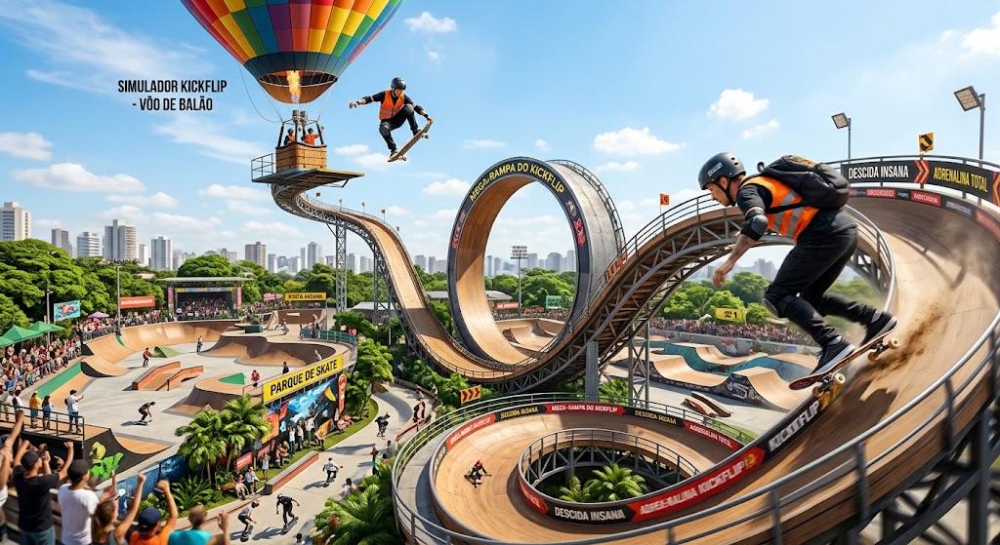

LoopCoaster.jpeg)
Radical
LoopCoaster
Uma montanha-russa radical onde os passageiros fazem o trajeto inteiramente de pé, simulando a postura sobre um skate. A atração começa com uma aceleração brutal direto para um loop gigante, seguido por uma sequência rápida de curvas com obstáculos temáticos no percurso, exigindo que os trilhos façam desvios dinâmicos e fechados, até culminar numa rampa final de grande altitude antes da frenagem de impacto.
Urban Drift.jpeg)
Radical
Urban Drift
Uma releitura urbana dos tradicionais carrinhos bate-bate. Em vez das estruturas convencionais, os veículos têm o formato estilizado de decks de skate e contam com amortecimento reforçado e mobilidade de deslizamento 360°, permitindo que os pilotos façam manobras de drift e colisões dinâmicas numa arena temática com luzes neon e som automotivo.
Simulador Kickflip
Radical
Simulador Kickflip
Atração imersiva de alta tecnologia que combina simulação de movimento e projeção em cúpula. Os visitantes iniciam a experiência sentindo a subida tranquila e panorâmica a bordo de um balão de ar quente; no ápice da altitude, o simulador projeta um salto no vazio sobre um skate virtual, descendo numa velocidade vertiginosa pela pista mais insana e íngreme do parque.
Balanço das Nuvens.jpeg)
Radical
Balanço das Nuvens
Uma atração clássica do estilo chapéu mexicano (chair-o-planes), mas com o topo decorado como um grande balão colorido iluminado. Conforme a estrutura central eleva-se e gira, os assentos pendurados expandem-se para fora, dando aos visitantes a sensação de flutuar livremente pelo céu do parque.
Elevador de Balão
Radical
Elevador de Balão
Torre de subida e queda controlada projetada com uma estrutura central rodeada por gôndolas em formato de cestos de balão de ar quente. Os cestos sobem suavemente oferecendo uma vista panorâmica completa do Skyride e realizam sequências de descidas e elevações rápidas com sensação de gravidade zero.
Show de Skate.jpeg)
Radical
Show de Skate
Espetáculo diário ao vivo com atletas profissionais executando manobras de alto nível (vert, street e mega rampa). O show conta com iluminação cênica, pirotecnia, trilha sonora intensa e momentos de interação com a plateia, destacando a cultura e a arte do skate.
Splashrun.jpeg)
Radical
Splashrun
Atração aquática em que os barcos têm o design exclusivo de um cesto de balão montado sobre rodas gigantes de skate. O percurso passa por canais de água rápidos, sobe uma rampa de grande altura e despenca numa queda íngreme, gerando uma grande onda de impacto (splash) que molha os passageiros e quem observa da ponte.
Playground.jpeg)
Seção crianças
Playground
Área infantil interativa com piso emborrachado e anti-impacto, repleta de brinquedos em formato de mini balões de ar quente, escorregadores em tubo, redes de escalada, pontes suspensas e estruturas lúdicas adaptadas para crianças pequenas.
Balloncel.jpeg)
Seção crianças
Balloncel
Carrossel temático encantador em que, em vez dos cavalinhos tradicionais, as crianças e famílias andam dentro de réplicas detalhadas e coloridas de cestos e balões de ar quente que sobem e desçam suavemente enquanto a plataforma gira ao som de músicas infantis.
Montdrift.jpeg)
Seção crianças
Montdrift
Montanha-russa infantil projetada para a primeira experiência de adrenalina das crianças. Os carrinhos têm o formato de skates com assentos individuais e cintos de segurança; o percurso é suave, mas traz pequenos obstáculos cenográficos ao longo do trilho para dar a sensação de que o skate está se desviando pela pista.
Balaround.jpeg)
Seção crianças
Balaround
Atração clássica no estilo xícara giratória, onde cada cabine é modelada como um balão de ar quente com cesto. Além do giro principal da plataforma, os passageiros podem controlar a velocidade do giro da sua própria cabine através do volante central.
Teatro de Histórias Red Bull.jpeg)
Seção crianças
Teatro de Histórias Red Bull
Auditório infantil interativo que combina atores ao vivo, performances de skate adaptadas e recursos de ilusão de ótica no cenário. As peças contam histórias de aventuras radicais, ensinando sobre superação, criatividade e segurança no esporte de forma lúdica.
SelvaRun.jpeg)
Seção crianças
SelvaRun
Pista interativa onde as crianças equipam óculos leves de Realidade Aumentada (R.A.) enquanto percorrem um circuito seguro. Através dos óculos, a pista física se transforma virtualmente em uma selva densa cheia de animais animados, vegetação mágica e desafios de coleta de pontos ao longo do caminho.
Balão Mágico
Seção crianças
Balão Mágico
Simulador de movimento voltado para a família que leva os pequenos em uma jornada fantástica: a experiência começa com um passeio calmo de balão por um reino colorido de castelos e nuvens, transicionando em seguida para uma corrida divertida de skates por caminhos mágicos.
Viagem de Balão.jpeg)
Viagem de Balão
Uma experiência exclusiva e contemplativa realizada em um balão de ar quente ancorado de grande porte. Os visitantes sobem a dezenas de metros de altura para apreciar a vista panorâmica de todo o parque Skyride e da região ao redor, garantindo momentos e fotos inesquecíveis durante o pôr do sol ou início da noite.
1 pessoa: R$ 150,00
2 pessoas: R$ 240,00 (R$ 120,00 cada)
Experiência Red Bull
Experiência Red Bull
Uma pista projetada com elementos de alta dificuldade (drops gigantes, bowls técnicos, corrimãos desafiadores) misturados com ilusões de ótica no solo e nas rampas. As ilusões visuais alteram a percepção de profundidade e distância, exigindo máxima precisão e controle de borda dos skatistas experientes.
1 pessoa: R$ 59,99
2 pessoas: R$ 100,00 (R$ 50,00 cada)


.jpeg)
.jpeg)